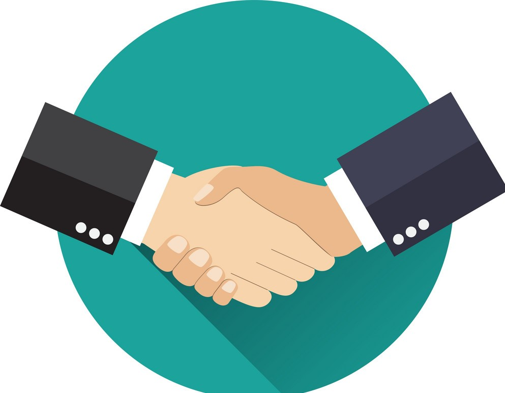

<ion-header>
  <ion-toolbar>
    <ion-title side="center">Select type of user</ion-title>
    <ion-buttons slot="start" (click)="backScreen()">
      <ion-button autoHide="false" >
        <ion-icon name="arrow-back-outline" ></ion-icon>
      </ion-button>
    </ion-buttons>
  </ion-toolbar>
</ion-header>
<ion-content>
  <ion-grid>
    <ion-row>
      <ion-col size="12">
        
      </ion-col>
      <ion-col size="12">
        <ion-button expand="block" (click)="redirectWithUserType('SENDER')">SENDER</ion-button>
      </ion-col>
      <ion-col size="12">
        <ion-button expand="block" (click)="redirectWithUserType('TRAVELER')">TRAVELER</ion-button>
      </ion-col>
    </ion-row>
  </ion-grid>
</ion-content>